Hi, my name is
João Guilherme.
I' am Full Stack developer
Hello World
Olá, prazer em conhecê-lo, como você já deve saber, meu nome é João Guilherme. Sou estudante de programação e, estou terminando o ensino médio, após terminar quero cursar ciência da computação na UFRGS, mas por quê? Desde criança meus pais me incentivavam a usar tecnologia, me davam videogames, computadores, etc. tenho aprendido sobre isso. Em 2022 entrei em um curso de programação Full Stack, estou finalizando. Abaixo, fiz um programa que conta os dias que tenho de experiência em cada idioma.
HTML
0
Daysfoi minha primeira linguagem, acho que dentre muitas, considero meu nível intermediário em HTML. sobre a minha forma de programar, não gosto de misturar com outras linguagens, (em linha e embutido).
JavaScript
0
Daysfoi minha primeira linguagem, acho que dentre muitas, considero meu nível intermediário em HTML. sobre a minha forma de programar, não gosto de misturar com outras linguagens, (em linha e embutido).
CSS
0
DaysCSS é a linguagem que mais demorei para entender no começo, talvez por ser a mais complexa que vi no começo, mas agora me dou bem com ela.
Jogo xadrez desde os oito anos, meu pai me ensinou, jogo até hoje, gosto de acompanhar os gran-mestres. Eu realmente admiro Magnus Carslen e Bobby Fischer.


meu passatempo favorito é talvez tocar instrumentos, meus favoritos são violão e violão. a primeira vez que segurei um foi quando eu tinha treze anos.
por último, mas não menos importante, é a física, não consigo decidir se gosto mais de guitarra ou física, mas com certeza sei que é minha matéria favorita na escola.